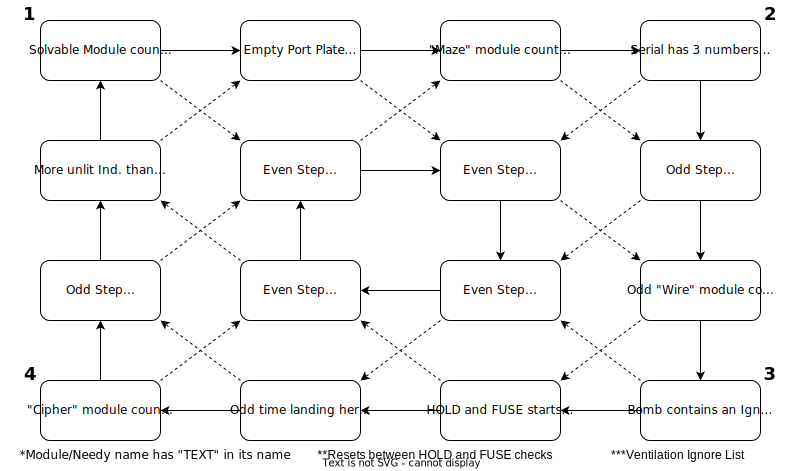

On the Subject of Ventilation
*Microwave Noises*
The module holds a small fan, 3 fuses, a LOCK switch, an old work light, and a submit lever.
Each fuse has an LED above it (HOLD LIGHT). Flipping the lock switch ON will set the LEDs to the fuse states. Flipping it OFF will clear them.
The work light will flash a 3 digit code indicated by the number of flashes, then a short pause, looping after a long pause:
- FIRST DIGIT: Starting corner for HOLD lights
- SECOND: How many steps to take on the flowchart (Calculate both)
- HOLD: multiply by the number of batteries (or 6 if none)
- FUSE: multiply by the number of ports (or 5 if none)
- THIRD: Starting corner for FUSE states
Use the flowchart below twice to set the three HOLD lights and FUSE states, once for each, then pull the lever to submit the combination and power the fan. Only the submit switch will strike. The lock switch must be on when submitting.
For each step on the flowchart, check if the condition is true. If so, take the dotted arrow. If not, take the solid one. The last space will be the correct states for either the HOLD or FUSE.
